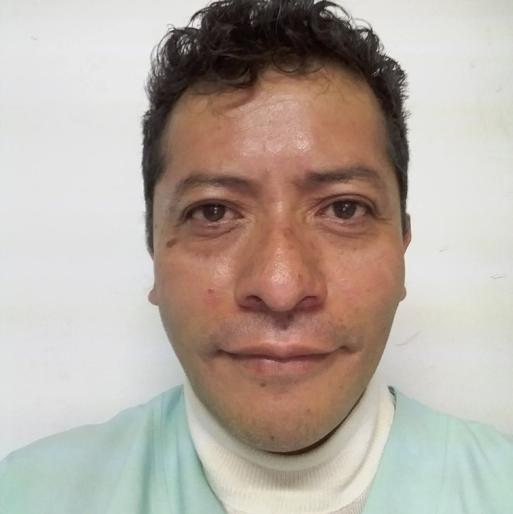
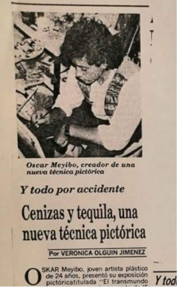
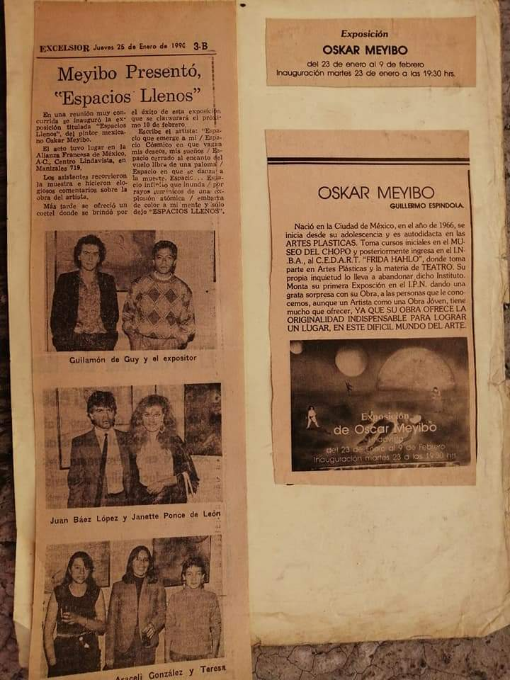
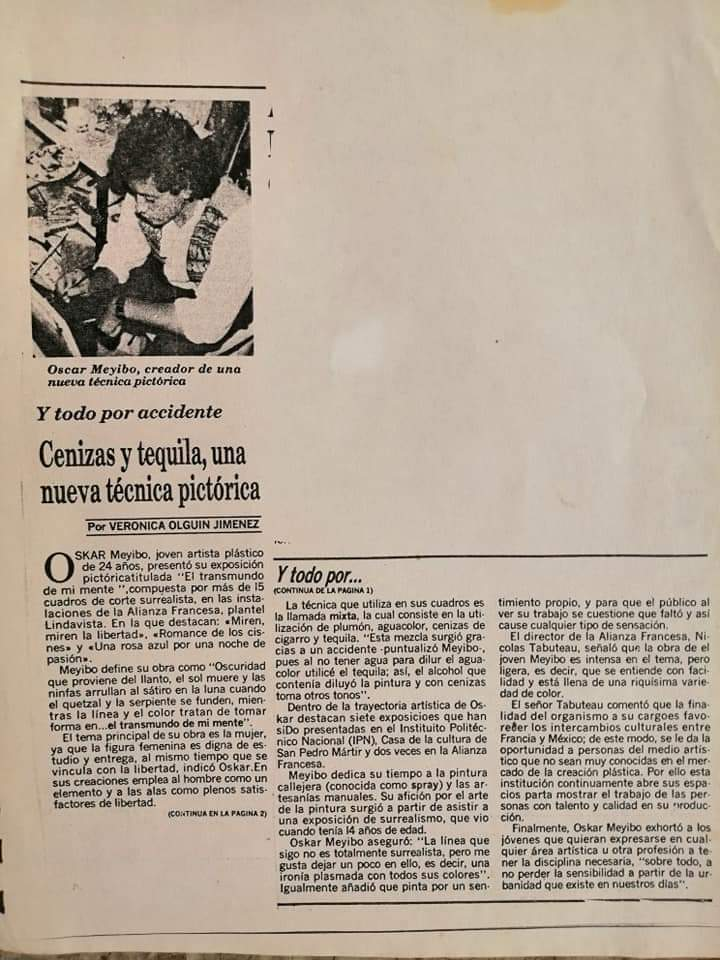

1966 — 2020
El artista
Nació en la Ciudad de México, en el año de 1966, se inicia desde su adolescencia y es autodidacta en las ARTES PLASTICAS. Toma cursos iniciales en el MUSEO DEL CHOPO y posteriormente ingresa en el I.N.B.A., al C.E.D.A.R.T. "FRIDA HAHLO", donde toma parte en Artes Plásticas y la materia de TEATRO. Su propia inquietud lo lleva a abandonar dicho Instituto. Monta su primera Exposición en el I.P.N. dando una grata sorpresa con su Obra, a las personas que le conocemos, aunque un Artista como una Obra Jóven, tiene mucho que ofrecer, YA QUE SU OBRA OFRECE LA ORIGINALIDAD INDISPENSABLE PARA LOGRAR UN LUGAR, EN ESTE DIFICIL MUNDO DEL ARTE.
"La línea que sigo es totalmente surrealista, pero me gusta dejar un poco en el edo; una ironía plasmada con todos sus colores."
— Oskar Meyibo7
Exposiciones
2
Alianza Francesa
15
Cuadros en "El transmundo"
'90
Excélsior · Enero 1990
A destacar
IPN
Primera exposición
Instituto Politécnico Nacional
Monta su primera muestra en el IPN, dando una grata sorpresa con su obra a quienes lo conocen. Una obra joven, con mucho que ofrecer — con la originalidad indispensable para lograr un lugar en el difícil mundo del arte.
Alianza Francesa
Plantel Lindavista · Ciudad de México
Presenta su obra en dos ocasiones en la Alianza Francesa de México, donde el director Nicolas Tabuteau destacó la intensidad de su trabajo y la riquísima variedad y calidad de sus creaciones.
1990
"Espacios Llenos"
Alianza Francesa · Manizales 718 · Inauguración 23 enero
Exposición reseñada por el periódico Excélsior el jueves 25 de enero de 1990. El acto tuvo lugar en la Alianza Francesa de México A.C., Centro Lindavista. Los asistentes recorrieron la muestra e hicieron elogiosos comentarios sobre la obra del artista. Se clausuró el 9 de febrero.
"El transmundo de mi mente"
Casa de la Cultura · San Pedro Mártir
Quince cuadros componen esta exposición de corte surrealista. Entre las obras destacan: Miren, miren la libertad, Romance de los cisnes y Una rosa azul para una noche de pasión. En ella, la línea y el color tratan de tomar la figura femenina como elemento central — el transmundo de su mente.
Técnica
La técnica que Meyibo utiliza en sus cuadros es la técnica mixta, la cual consiste en la utilización de plumón, aguacolor, cenizas de cigarro y tequila.
Esta mezcla surgió gracias a un accidente —puntualizó Meyibo— pues al no tener agua para diluir el aguacolor utilizó el tequila; así, el alcohol que contenía diluyó la pintura y las cenizas tomaron otros tonos.
Sus creaciones emplean la figura femenina como elemento central y las alas como plenos satisfactores de libertad.
Plumón
Base de trazo y definición
Aguacolor
Color y transparencia
Cenizas
Textura y profundidad
Tequila
Diluyente — el accidente que lo cambió todo

Prensa y crítica
La obra de Meyibo es intensa en el tema, pero ligera; se entiende con facilidad y está llena de una riquísima variedad y calidad de color.
Nicolas Tabuteau
Director · Alianza Francesa de México
Pinta por un sentimiento propio, y para que el público al ver su trabajo se cuestione qué faltó y así cause cualquier tipo de sensación.
Excélsior
Jueves 25 de enero de 1990 · Sección 3-B
Una obra joven con mucho que ofrecer, ya que su obra posee la originalidad indispensable para lograr un lugar en este difícil mundo del arte.
Guillermo Espíndola
Reseña crítica · Exposición IPN
Formación
Autodidacta
Desde la adolescencia
Se inicia en las artes plásticas desde joven, impulsado por su propia inquietud y sensibilidad ante el mundo que lo rodea.
Museo del Chopo
Cursos iniciales
Toma sus primeros cursos formales en el Museo del Chopo, donde consolida las bases de su técnica y lenguaje visual.
IPN · CEDART
"Frida Kahlo"
Ingresa al CEDART "Frida Kahlo" del INBAL, donde toma parte en Artes Plásticas y la materia de Teatro. Su propia inquietud lo lleva eventualmente a abandonar dicho Instituto para forjar su propio camino.
Pintura callejera
Arte manual y urbano
Dedica tiempo a la pintura callejera —conocida como spray— y a las artesanías manuales. Su afición por el arte de la pintura surgió al asistir a una exposición de surrealismo que vio cuando tenía 14 años de edad.
Memoria Histórica


El artista creando arte